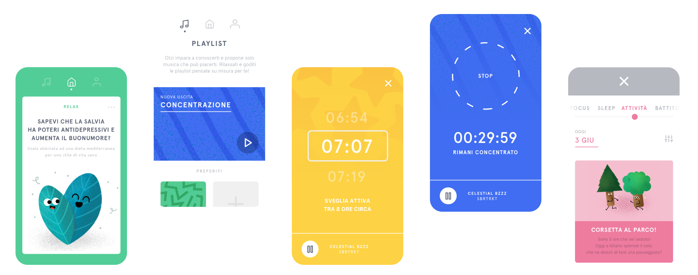

You can interact with Otzi through a serie of simple gestures to change track, adjust the volume or like a song. Otzi is going to give you a feedback through his face. Its unique avocado shape is designed to hold a very special shining seed which is going to guide you trough different activities: relax, through personalized yoga and breathing sessions; focus, the seed act as a timer to help you keep studying; and sleep, monitoring you REM phase and your sleep activities. The device works also with its app that tracks and provides you with feedback while giving you customized suggestions on how to maintain your daily balance.
Show prototype
The research
Starting from research on the young adults' target, we had to create a smart object that could help them during their daily routine. From the desk research, we analyzed how the main problem for young adults was stress-related. Both young workers and students struggle with concentration and low productivity during the day and the number of people that declared to be stressed was highly growing. After different in-field research, such as in-depth interviews, focus groups, and design thinking activities, we identified four different key moments to help users: the awakening moment, the work or study hours, the spare time, and the sleeping hours and we decided to offer a solution that used both light and music to relax and help users during their daily routine.
The project
The designed solution is composed of a smart object and its connected app. The smart object has an avocado shape with a seed that lights up. The user can interact with the object through selected gestures, changing the music and the volume as he wants and it gives some feedback through the screen. At the same time, the seed is used for different activities: it helps the user regulate his breath during relax sessions, it works as a tomato-timer when placed above the app during the focus sessions, and monitors the user’s sleep when placed under the pillow. At the same time, the app shows the user all the data collected, giving him recommendations for a healthier lifestyle and proposing different exercises throughout the day. The app can be connected with different smart devices to create a more accurate program and a better analysis on the user’s stress. All the components follows a colour code in which green stands for RELAX, yellow for SLEEP and blue for FOCUS, in addition to that we added the pink elements for all the information related to the monitoring information collected through smart devices.
